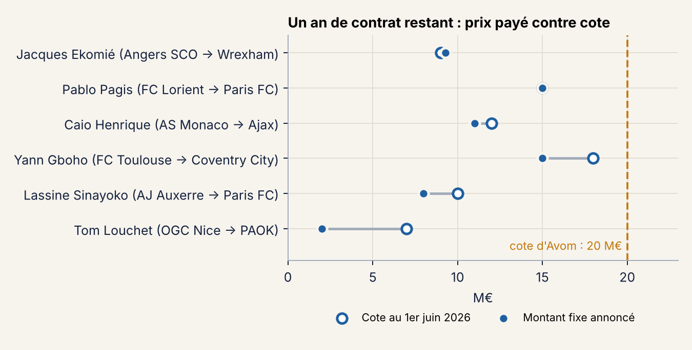

Arthur Avom, 21 ans (22 le 15 décembre), milieu central camerounais, 14 sélections. Son contrat avec Lorient se termine le 30 juin 2027 : le club a levé cet été l'option d'un an, mais n'a pas trouvé d'accord pour le vendre. Il demandait environ 15 M€ en juillet (L'Attaquant, 10/07/2026). Avom reste le troisième joueur le mieux coté parmi les 148 joueurs de Ligue 1 de mes données dont le contrat s'arrête en 2027.
Le mercato d'hiver ouvre en janvier. Et dès le 1er janvier 2027, un club étranger peut lui faire signer un pré-contrat, puisqu'il lui restera moins de six mois (règlement FIFA du statut et du transfert des joueurs, art. 18.3).
Sur le terrain, c'est un récupérateur : tacles et interceptions par 90 minutes au niveau des 20 % meilleurs milieux de Ligue 1, et une note moyenne du même niveau. Il crée un peu plus que la moyenne des milieux et marque peu. Ce qui le vend, c'est son volume de jeu et son âge.
Mon modèle situe sa cote de juin 2027 entre 13 et 42 M€, avec 23,6 M€ au centre. La fourchette est large parce qu'à 21 ans, une cote peut encore doubler ou s'effondrer, et le modèle ignore qu'il ne lui reste qu'un an.
Le meilleur repère, ce sont donc les ventes de l'été. Pagis, Gboho, Sinayoko, Ekomié et Caio Henrique, tous à un an de la fin de leur contrat, sont partis entre 0,8 et 1,03 fois leur cote. Tom Louchet est l'exception : 2 M€ pour une cote de 7 M€. Appliqué à Avom, ce repère donne 16 à 21 M€ aux conditions de l'été dernier, 17,5 M€ en médiane, plus que ce que Lorient demandait en juillet.

Montants de la presse (Maxifoot, info.fr, beIN Sports, Foot Mercato) ; celui de Gboho n'est pas officiel. Avec six cas, je m'en sers comme d'un ordre de grandeur.
| Option | Lorient touche | Le joueur | Risque principal |
|---|---|---|---|
| Prolonger | rien aujourd'hui, garde un actif coté 13 à 42 M€ en 2027 | hausse de salaire, sécurité | en France, pas de clause libératoire : son départ dépendra du club |
| Vente en janvier | hypothèse 10 à 16 M€ (50 à 80 % de la cote, faute de comparable d'hiver) | contrat de 4 ou 5 ans tout de suite | fenêtre courte, peu d'acheteurs prêts à payer |
| Vente à l'été 2027 | impossible sans prolongation : le contrat s'arrête le 30 juin | seulement via une prolongation | un « accord pour le laisser partir » non homologué n'a aucun effet |
| Départ libre en juillet 2027 | 0, hors indemnité de formation éventuelle (RSTP, annexe 4) | prime à la signature et salaire plus hauts, l'acheteur n'ayant pas d'indemnité à payer | une blessure ou une saison ratée d'ici juin |
Ouvrir le marché dès janvier, sans fermer la porte au départ libre. Le joueur a intérêt à faire savoir qu'il ne prolongera pas aux conditions actuelles. Lorient, qui risque de tout perdre en juin, a alors intérêt à vendre en janvier à un prix proche des ventes de l'été. Si aucun club ne paie un montant que Lorient accepte, le joueur peut toujours signer un pré-contrat à l'étranger et partir libre.
Je ne recommanderais une prolongation que courte (2029 au plus tard), avec une vraie hausse de salaire, puisque l'agent ne peut pas y inscrire de prix de sortie.
Le contrat réel du joueur et ses clauses, son état physique, ce qu'il veut, les offres déjà reçues. Les cotes s'arrêtent au 1er juin 2026 et les montants de transferts viennent de la presse. Les articles cités sont à revérifier dans leur version en vigueur avant toute utilisation.